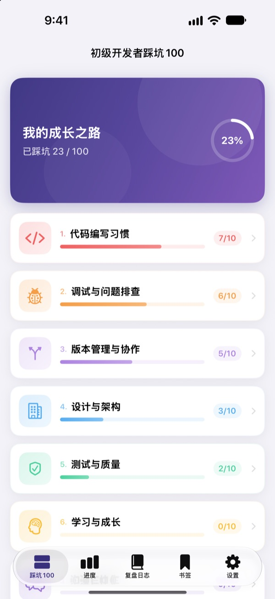
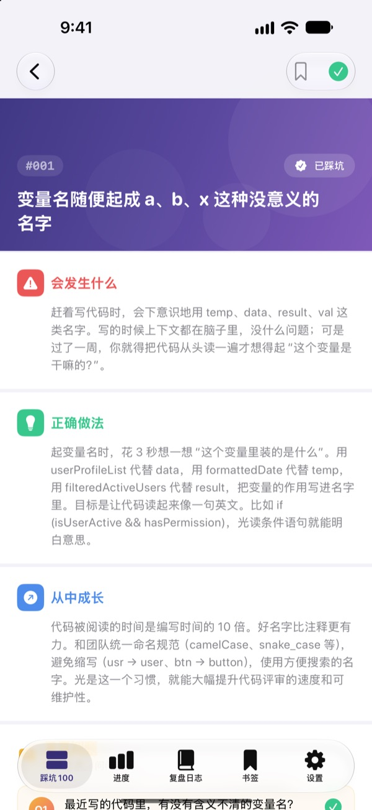
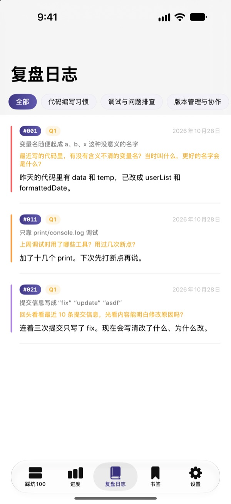
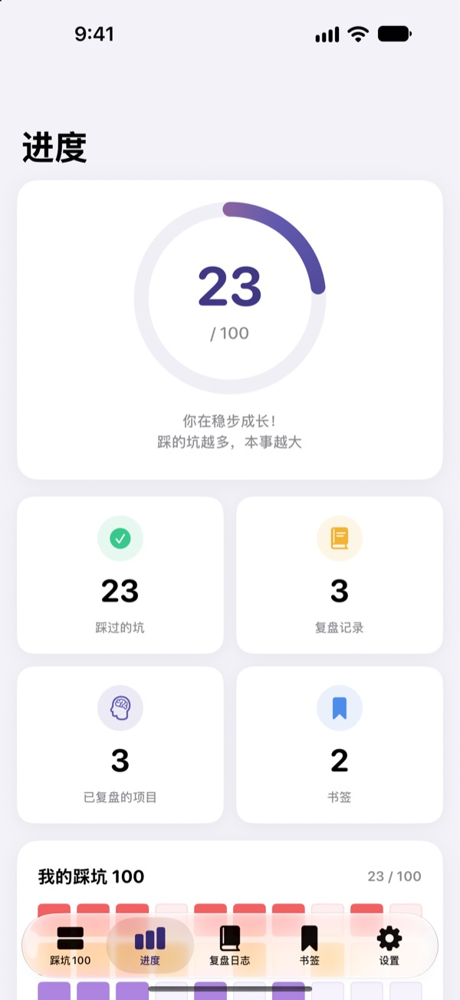

别等踩了坑
才知道疼
我们整理了新手开发者最常踩的 100 个坑。每个坑都会讲清楚会发生什么、该怎么做、能学到什么，再回答一个复盘问题，同一个坑就不会踩第二次。
前 30 个坑免费。支持 iPhone、iPad 和 Mac。

打开一个坑看看
这是免费开放的第一个分类里的 10 个坑，内容和 App 里一模一样。踩过的就点“已踩坑”勾上吧。
代码评审里又被指出同样的问题？
变量名看不懂、函数几百行、到处复制粘贴。前辈们都踩过这些坑，可你往往要亲自摔一跤才明白。踩坑100 先把这些坑摆在你面前，再让你结合自己的经历复盘，帮你不再重复同样的错误。
每个坑：场景、做法、收获
打开一个坑，会分三部分讲：会出现什么情况、应该怎么做、能从中学到什么。
从代码编写习惯到安全、性能，共 10 个分类，只挑真实工作中反复出现的坑。

不止读完，还要复盘
每个坑配 4 个复盘问题，一共 400 个。想着自己的项目写下回答，读到的知识就变成了自己的经验。
写下的回答会按分类收进复盘日志，随时可以回看。

成长多少，一眼看清
勾上踩过的坑，分类进度和总进度就会一点点涨起来。想再看的坑可以加书签。
记录通过 iCloud 在 iPhone、iPad 和 Mac 之间同步。

三步就能开始
- 1
选一个分类
代码编写习惯、调试与问题排查、版本管理与协作可以免费直接看。
- 2
读完打勾
踩过的坑，点“已踩坑”记下来。
- 3
回答复盘问题
想想自己的经历，哪怕只写一句。回答会收进复盘日志。
涵盖的 10 个分类
- 代码编写习惯
- #001–#010 · 免费
- 调试与问题排查
- #011–#020 · 免费
- 版本管理与协作
- #021–#030 · 免费
- 设计与架构
- #031–#040 · PRO
- 测试与质量
- #041–#050 · PRO
- 学习与成长
- #051–#060 · PRO
- 沟通与协作
- #061–#070 · PRO
- 部署与运维
- #071–#080 · PRO
- 安全与数据
- #081–#090 · PRO
- 性能与优化
- #091–#100 · PRO
每个分类 10 个坑，每个坑 4 个复盘问题。
30 个免费，全部 100 个用 PRO
免费
- 前 3 个分类，30 个坑
- 对应的 120 个复盘问题
- 打勾、复盘日志、进度、书签
- iCloud 同步（iPhone、iPad、Mac）
踩坑100 PRO
- 其余 7 个分类，再多 70 个坑（#031–#100）
- 新增 280 个复盘问题
- 以后的所有内容更新
可选按月订阅、按年订阅（比按月最多省 50%）或一次性买断。
不收集个人信息，没有分析工具，也没有广告。
常见问题
免费能看到哪些？
代码编写习惯、调试与问题排查、版本管理与协作这 3 个分类的 30 个坑和复盘问题都能用。打勾、复盘日志、进度、书签和 iCloud 同步也都免费。
买了 PRO，怎么在其他设备上用？
用同一个 Apple ID 登录，然后在购买页面点“恢复购买”。
怎么取消订阅？
随时可以在“设置”App 的 Apple ID › 订阅中管理或取消。若未在当前周期结束前 24 小时取消，订阅会自动续期。买断只需付一次。
设备之间记录不同步。
请确认所有设备都用同一个 Apple ID 登录了 iCloud，并且在设置里为这个 App 打开了 iCloud。同步还需要联网。
想清空所有记录。
在 App 的设置里点“重置所有数据”，打勾、复盘记录和书签都会被删除，且无法恢复。
能在哪些设备上用？
iPhone、iPad 和 Mac 都可以。买过的 PRO 在同一个 Apple ID 的所有设备上都能用。
我的记录会被发到别处吗？
不会。打勾和复盘回答只保存在你的设备和你自己的 iCloud 里。不收集个人信息，没有分析工具，也没有广告。
有问题或建议，欢迎发邮件到 leeo@kakao.com。